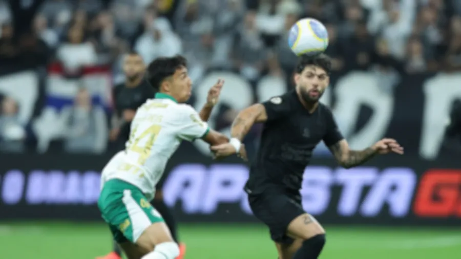

DERBY PAULISTA PEGA FOGO!
O MAIOR CLASSICO DO BRASIL EM SEU NOVO CAPITULO!
CORINTHIANS QUEBRA JEJUM DE 8 JOGOS E VENCE PALMEIRAS POR 2X0 NESSA NOITE NA NEO QUIMICA ARENA
Tudo sobre o corinthians 24h por dia 7 dias por semana!
O MAIOR CLASSICO DO BRASIL EM SEU NOVO CAPITULO!
CORINTHIANS QUEBRA JEJUM DE 8 JOGOS E VENCE PALMEIRAS POR 2X0 NESSA NOITE NA NEO QUIMICA ARENA
Essa frase foi dita por Yuri Alberto no fim da partida de ontem, logo apos chutar uma CABEÇA DE PORCO que foi jogada em campo.
veja o video a seguir